【2026大稻埕美食推薦】迪化街.永樂市場必吃熱門小吃～老字號和菓子、百年油飯、五郎套餐推薦～
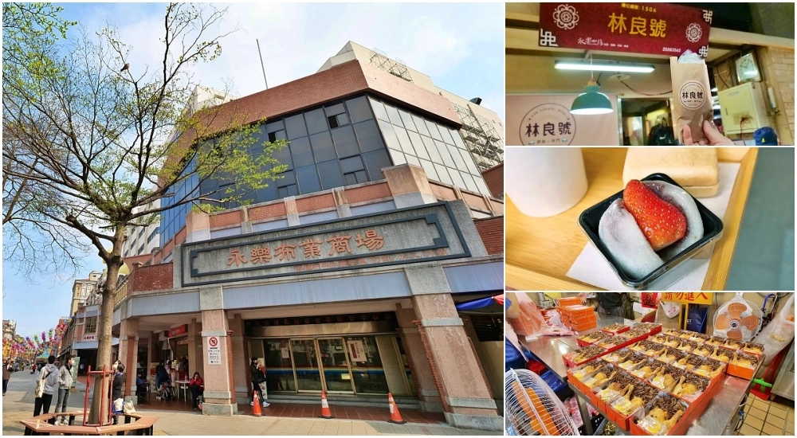
永樂市場 停車
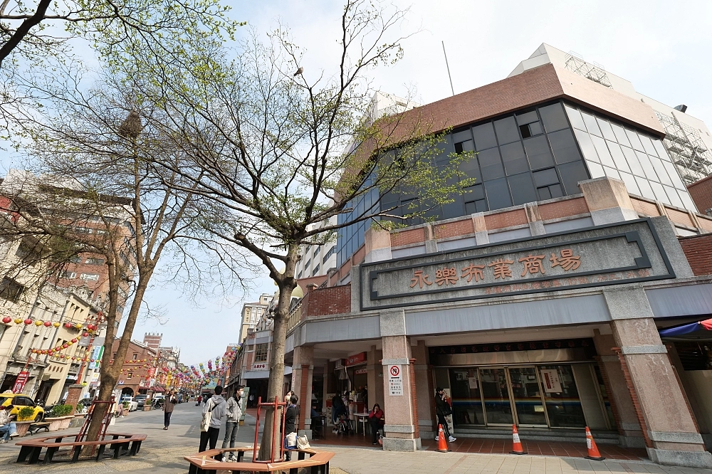
永樂市場，從北門捷運站走過來約十分鐘，算是逛大稻埕的起點。
停車｜可以停永樂市場地下停車場或是大稻埕公園地下停車場。
大稻埕美食清單
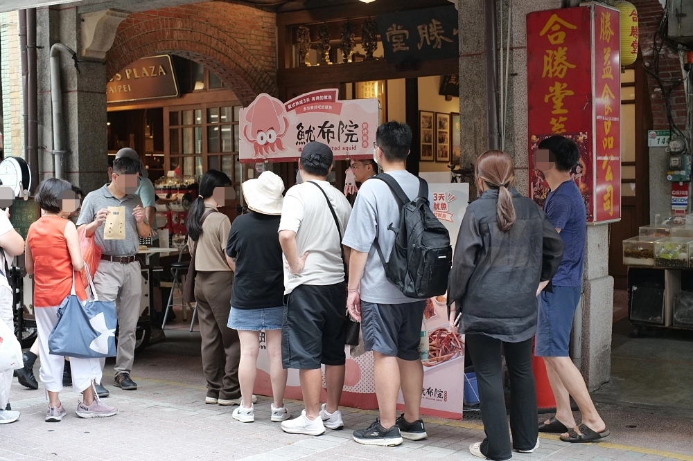
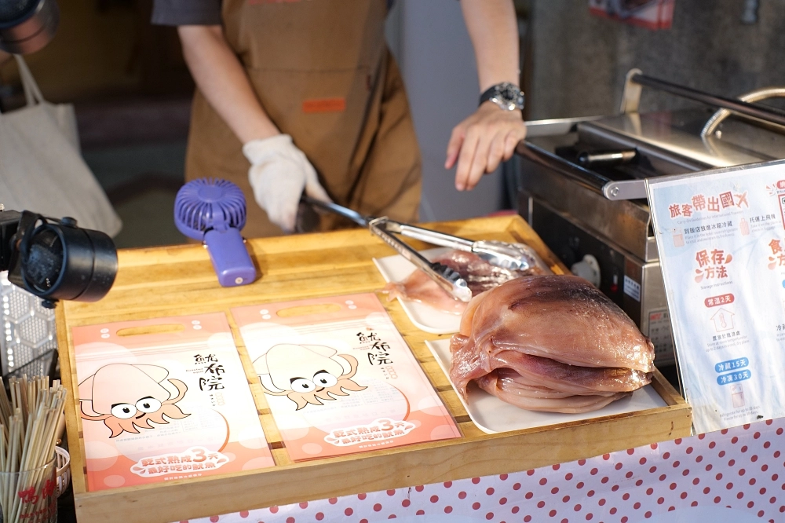
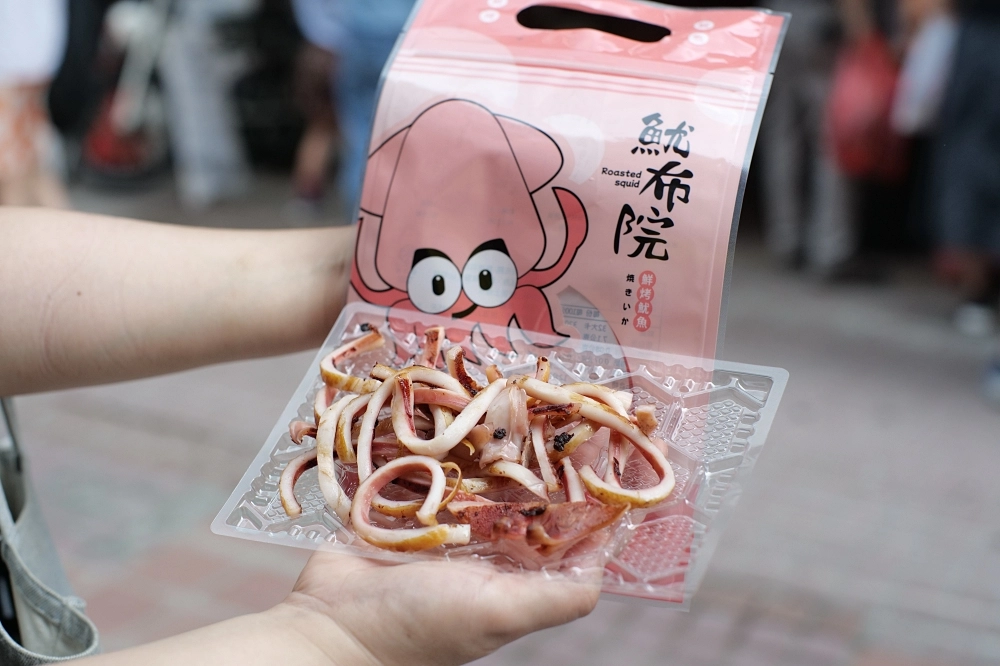
【魷布院鮮烤魷魚】太香太犯規啦！昨天去大稻埕本來只是想買雞捲，結果走到迪化街突然聞到一股焦香味，超香，整個人被味道拉走～一看，居然一堆人在排隊，我也立刻加入行列！這家叫「魷布院」，賣現烤魷魚，真的超誇張好吃！魷魚Q彈不會硬，重點是完全不腥，大人小孩都能吃，連牙齒敏感的也可以放心咬下去那種～拿回家邊追劇邊吃，一口接一口根本停不下來，超級涮嘴！想找迪化街的隱藏版美食？這攤一定要試試，當下酒菜、追劇零嘴、送人當伴手禮都超可以！
店名：魷布院鮮烤魷魚144號攤
地址：台北市大同區迪化街一段144號
營業時間：星期六日 國定假日11:30-18:00
官方LINE：@547nodms
店名：魷布院鮮烤魷魚26號攤
地址：台北市大同區迪化街一段26號
營業時間：11:30-18:00
IG：魷布院鮮烤魷魚迪化創始店
迪化街美食：永樂車輪餅
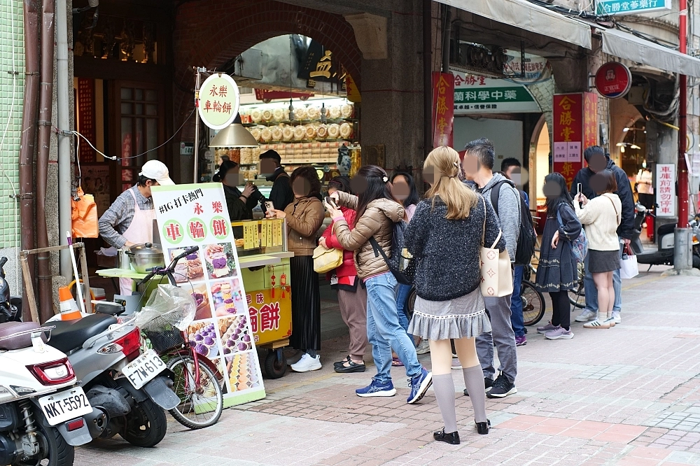
迪化街「永樂車輪餅」大稻埕必吃！紫心地瓜爆餡車輪餅
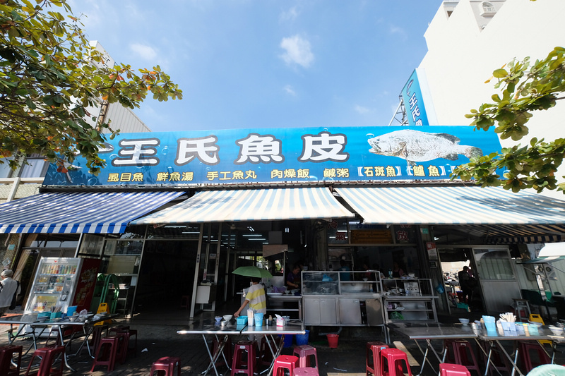
走進大稻埕的永樂車輪餅，就能看到麵糊在鐵板上滋滋作響，
搭配用心填滿的餡料，現場香氣鋪鼻，吸引無數饕客和遊客前來打卡。
特別推薦的紫心地瓜口味，顏色夢幻又帶地瓜的天然纖維口感，滿滿一口滿足！
此外，奶油內餡更是亮點，加入微微柳橙皮增添層次，香甜不膩口，讓人一試成主顧！
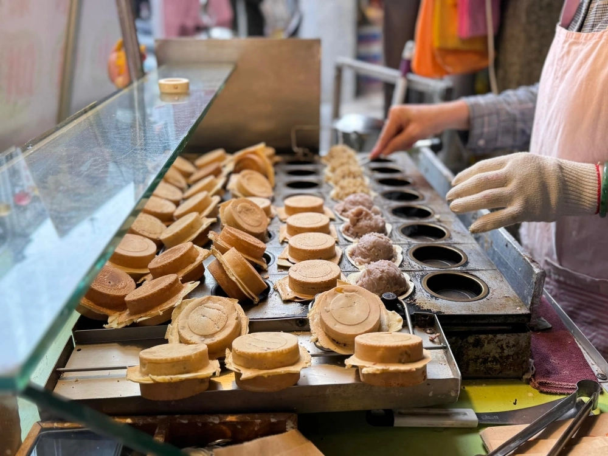
還有芋頭和花生口味也令人驚喜，完全不同於一般店家的鮮奶油混合餡，
這裡用的是純正芋泥和花生泥，香氣濃郁、口感紮實，彷彿在吃整顆芋頭和花生。
雖然價格稍高，但滿滿的真材實料，絕對值得一試！
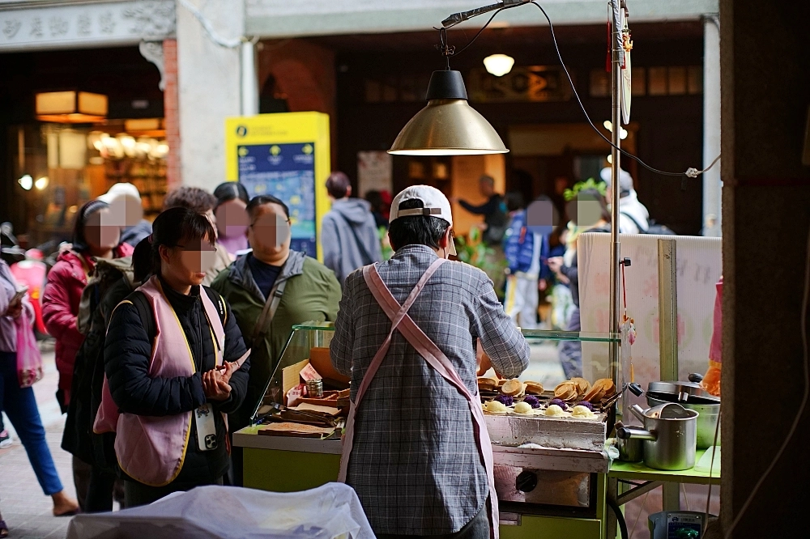
餐廳名稱：永樂車輪餅
地址：103台北市大同區迪化街一段146號騎樓
營業時間：11:30～18:00（星期二休息）
口味：蘿蔔絲、香橙奶油、大紅豆、紫心地瓜、抹茶（均一價20元）
南瓜、花生（均一價30元）
迪化街美食：妙口四神湯 肉包專專賣店
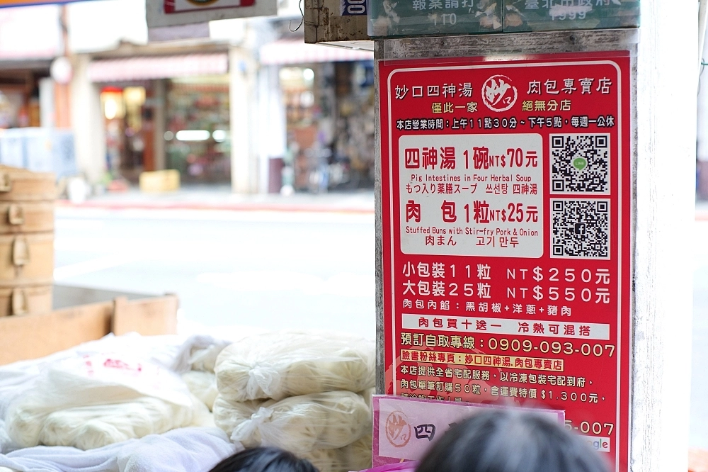
走進充滿年味的迪化街，還沒正式踏進年貨大街，
就被這家妙口肉包專賣店吸引住了！人氣必點的手工肉包，只要 $25，
就能享受鬆軟Q彈的外皮，包裹著鮮嫩多汁的豬肉餡。
內餡混合洋蔥和濃郁黑胡椒香氣，鹹甜恰到好處，完全不油膩！
無論當早餐還是下午點心，都是暖胃又滿足的好選擇，絕對值得一試。
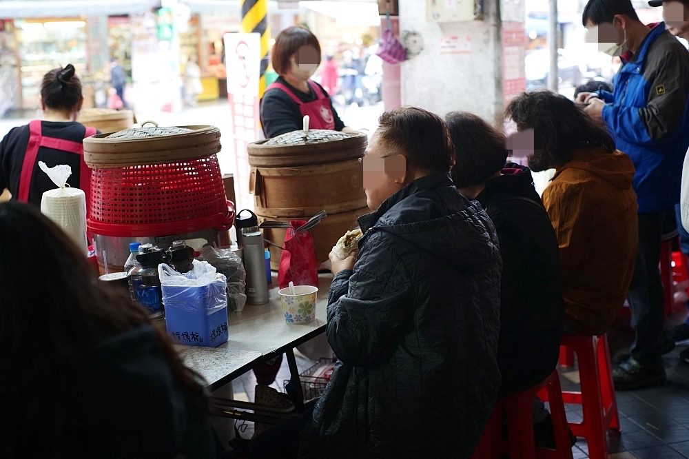
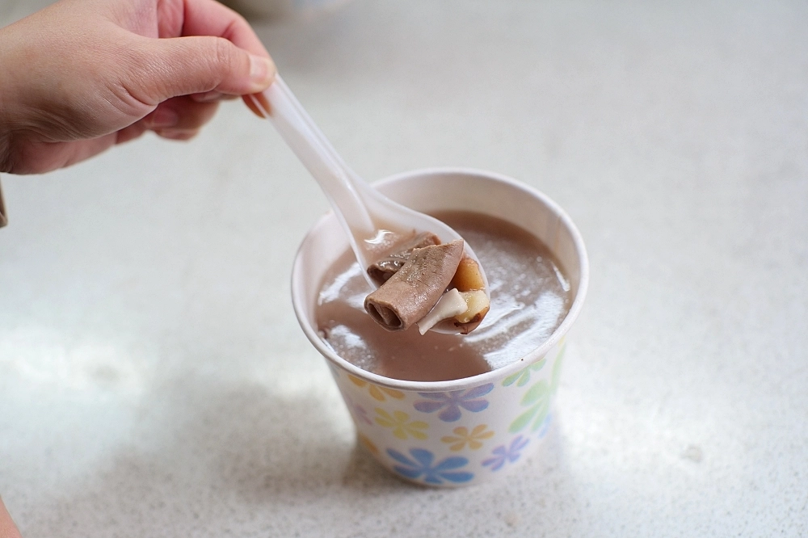
四神湯暖胃｜料多到湯滿溢！別錯過店內的四神湯，$70
一碗幾乎全是料！蓮子、茯苓、薏仁，
加上清洗得乾淨無腥的軟嫩豬腸，每一口都充滿驚喜。
湯頭帶有微微中藥香和酒香，紫色湯色更是獨特又誘人。
無論是在逛街中途補充能量，還是寒冬暖胃，這碗湯都是絕佳選擇！
年貨大街逛累了，記得來妙口坐坐～
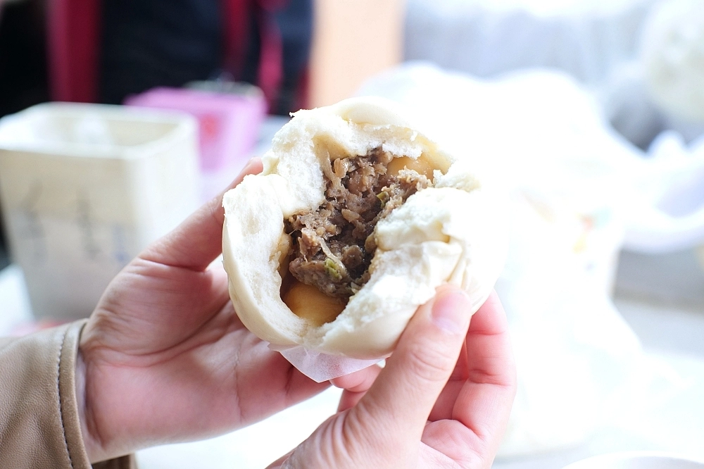
餐廳名稱：妙口四神湯.肉包專賣店
時間：11:30-17:00（週一公休）
電話：0970-135-007
地址：台北市大同區民生西路388號